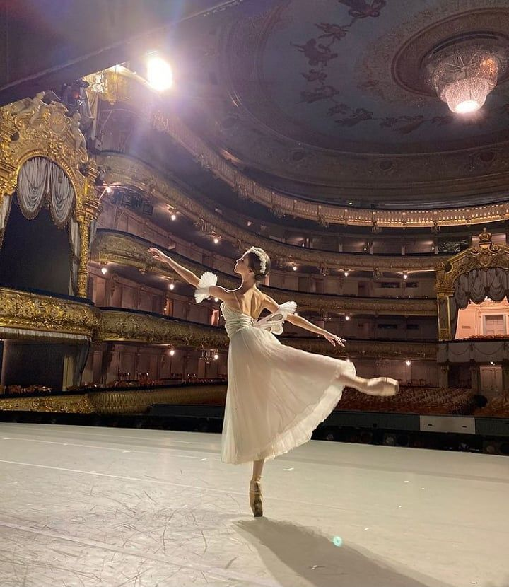
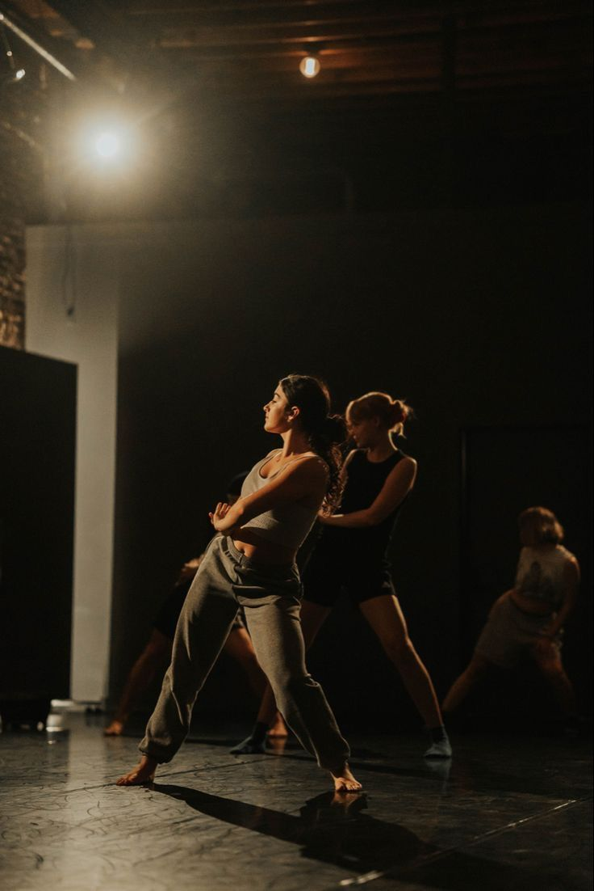
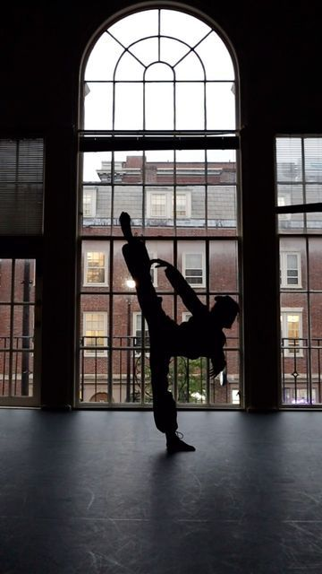
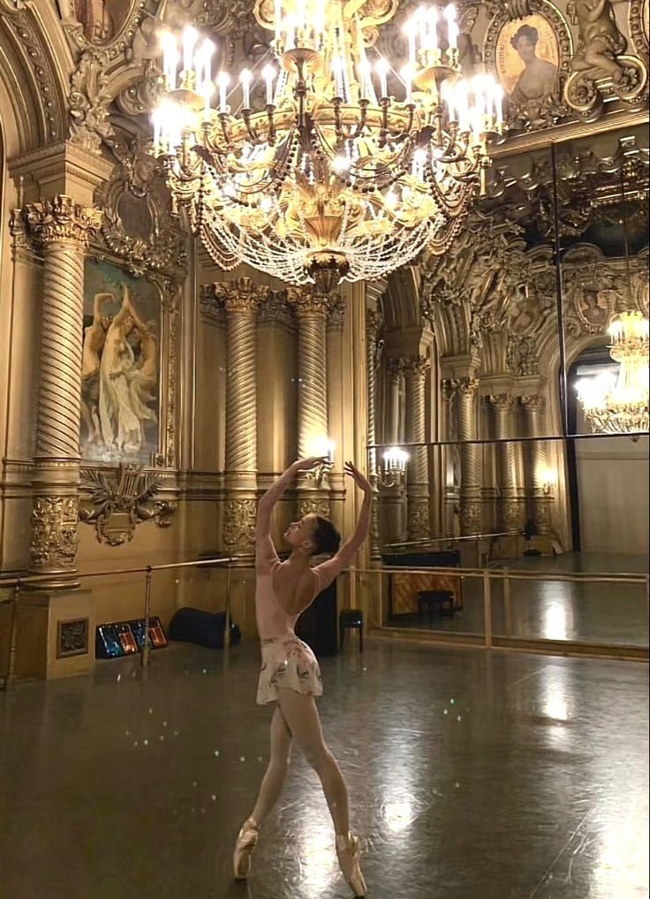

Meet Nikol
Hi my name is Nikol Kontogiannatou and i'am 15 years old.I have a lot of hobbies like playing the piano or playing batminghton,but i especially like dancing.I do ballet,modern and hip hop.




The Art of Dance
Dance is a dynamic form of artistic expression that transcends cultural boundaries, blending physical movement, rhythm, and emotion. It has the power to communicate stories, convey deep emotions, and create connections between individuals. Whether performed for entertainment, ritual, or personal expression, dance has long been a universal language that unites people of all ages, backgrounds, and abilities.
Ballet is one of the most graceful and disciplined forms of dance. Originating in the Renaissance courts of Italy and later flourishing in France and Russia, it is characterized by its highly structured technique and elegant movements. Ballet dancers execute precise positions and jumps, often using pointe shoes to dance on the tips of their toes, creating an ethereal and weightless quality. This art form demands intense physical training, dedication, and control, with dancers spending years perfecting their craft.
Modern dance emerged in the early 20th century as a rebellious response to the rigidity of ballet. Pioneers like Martha Graham and Isadora Duncan sought to break free from classical traditions, emphasizing personal expression, natural movement, and spontaneity. Modern dance is highly versatile, often incorporating elements of everyday gestures, improvisation, and contact with the floor. It allows for greater freedom and experimentation, with choreography often reflecting emotional or social themes.
Hip hop dance is a vibrant, energetic, and expressive form of street dance that has its roots in the urban communities of the 1970s. Often associated with hip hop music, it incorporates a wide range of styles, including breaking, locking, and popping. Hip hop dance is marked by its high energy, rhythm, and individuality, with dancers frequently showcasing improvisation and battle-style choreography. It has become a global cultural movement, influencing not only dance but also fashion, music, and art.